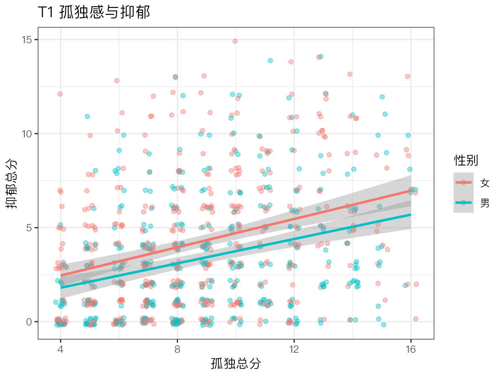
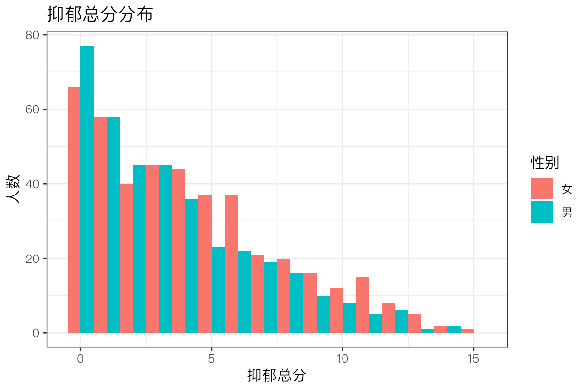
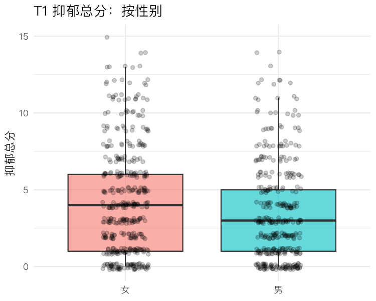

ggplot2 绘图与 Quarto / R Markdown 可复现报告
本课学习目标
- 用 ggplot2 绘制直方图、散点图、分组箱线图
- 理解“图层”语法：数据 + 映射 + 几何对象
- 用 Quarto 或 R Markdown 生成包含代码、结果和文字的报告（毕业项目将用它提交）
核心概念
- 图形语法grammar of graphics
- 映射aesthetic mapping, aes()
- 几何对象geom
- 可复现报告reproducible report
- Quarto / R Markdownliterate programming
本课结构：直觉 → 最少数学 → R 代码 → 理解检查 → 练习 → 小结。文中的交互图示可拖动或点击；测验答错会先给提示，答错两次可查看解析。
① 直觉图形是“一层层叠上去”的
机构主任请你为年报画一张“孤独感与抑郁”的图，再按性别区分颜色。用 Excel，你得一步步点选：插入图表、选数据、改颜色、加趋势线……下次数据更新又要重来。用 R 的 ggplot2，你写下的是一份图的“配方”：用哪份数据、哪个变量放横轴、哪个放纵轴、用什么颜色区分、画点还是画线。配方写好，数据更新后重跑一遍，图就自动更新。
图形语法：数据 + 映射 + 几何对象
ggplot2 基于 Wilkinson 提出的图形语法（grammar of graphics）（由 Hadley Wickham 在 R 中实现）。每张图都由几个部件组成：
- 数据（data）：一个数据框，一行一人。
- 映射（aesthetic mapping, aes()）：把变量对应到图上的视觉属性：横轴位置 x、纵轴位置 y、颜色 colour、填充 fill、大小 size、形状 shape。
aes(x = sleep, y = depress)的意思是“把睡眠变量放在横轴、抑郁变量放在纵轴”：每个人的睡眠值决定点的左右位置，抑郁值决定上下位置。 - 几何对象（geom）：用什么图形元素表现数据，如
geom_point()点、geom_histogram()直方图柱、geom_boxplot()箱线图、geom_smooth()拟合线。 - 其他可选层：
labs()标题和轴标签、theme_*()外观主题、facet_wrap()分面（按组拆成多个小图）。
各部件用 + 一层层叠加（注意：ggplot 用 +，不是 |>）。
想象在投影仪上叠透明胶片：第一张只画了坐标轴（ggplot(数据, aes(...))），第二张画上散点（+ geom_point()），第三张画上回归线（+ geom_smooth()），第四张写上标题（+ labs()）。每一张都可以单独抽掉或替换。
aes(colour = 性别)：颜色随变量变化（男女不同色），会自动生成图例。geom_point(colour = "blue")：所有点固定为蓝色。把固定值写进 aes()（如 aes(colour = "blue")）是常见错误，结果会是一个莫名其妙的、名为“blue”的图例。
选对图：三种最常用的图
| 目的 | 图 | geom |
|---|---|---|
| 看一个连续变量的分布（偏态、峰、离群值） | 直方图 | geom_histogram() |
| 看两个连续变量的关系 | 散点图（+ 拟合线） | geom_point() / geom_jitter() + geom_smooth() |
| 比较各组的分布 | 分组箱线图 | geom_boxplot() |
检查题目的偏态，用直方图（或条形图，对 0–3 分这类只有几个取值的题目尤其直观）：一眼就能看出大多数人集中在哪一端、尾巴拖向哪边。箱线图也能提示偏态（中位线偏向箱子一侧、一边的须更长），但会隐藏分布的细节。表中没有的两种情形：看同一批人随时间的变化，用长格式数据（4.2 课）画折线，aes(x = wave, y = 分数, group = id) 画每个人的轨迹，再叠加一条粗的均值线；网络图交给 qgraph（6.4 课）。
量表题目只取几个整数值，散点会大量重叠在格点上。geom_jitter() 给每个点加一点随机抖动，让重叠的点散开，便于看出密度；但要记住点的位置被轻微挪动了。
可复现报告：代码、结果、文字放在一起
小周把 SPSS 输出的数字一个个复制到 Word 论文里。后来数据更正，他要逐一找到并修改 40 多个数字，最后还漏改了 3 个，答辩时被问住。
可复现报告（reproducible report）把文字、代码和代码的运行结果写在同一个文件里。渲染（render / knit）时，软件从头运行所有代码，把表格、图和数字自动插入文字中，生成 HTML、Word 或 PDF。数据一改，重新渲染即可，所有数字同步更新，不会遗漏，也不会抄错。这种“文字与代码交织”的写作方式叫文学化编程（Quarto / R Markdown（literate programming））。
- R Markdown（
.Rmd）：历史较久、应用最广。在 RStudio 中点 Knit 按钮渲染。 - Quarto（
.qmd）：Posit 推出的新一代系统，语法与 R Markdown 几乎相同，支持 R、Python 等多种语言。新版 RStudio 已内置 Quarto，点 Render 按钮渲染。
文件由三部分组成：顶部的 YAML 头（用 --- 包围，设定标题、输出格式）；Markdown 文字（# 标题、**粗体**、列表）；代码块（用三个反引号包围的 {r} 块）。文字中还可以写行内代码（反引号 + r + 代码），如 r = `r round(cor(x, y), 2)`，渲染时变成 r = 0.31。
本课程的毕业项目（第 10 模块）要求用 Quarto 或 R Markdown 写成。任何读者（审稿人、合作者，或几个月后的你自己）打开报告，看到的每个数字都能追溯到产生它的代码；想换一种参数试试，改一行重新渲染即可。
② 最少数学箱线图里的五个数
箱线图展示的是“五数概括”：
- \(Q_1\)
- 第一四分位数：25% 的人低于它（箱子下沿）。
- \(Q_2\)
- 中位数：50% 的人低于它（箱中粗线）。
- \(Q_3\)
- 第三四分位数：75% 的人低于它（箱子上沿）。
- \(IQR\)
- 四分位距 \(=Q_3-Q_1\)，中间 50% 的人的范围（箱子高度）。
超出 \(Q_1 - 1.5\,IQR\) 或 \(Q_3 + 1.5\,IQR\) 的点被单独画出，作为“可能的离群值”（这是 ggplot2 的默认规则，Tukey 提出）。例：课程数据中女性 T1 抑郁总分 \(Q_1=1,\ Q_2=4,\ Q_3=6\)，\(IQR=5\)，上须至多到 \(6+7.5=13.5\)；男性 \(Q_1=1,\ Q_2=3,\ Q_3=5\)，上须至多到 11。
直方图的柱宽（binwidth）决定把数值分成多宽的区间来计数；对只取整数的总分，binwidth = 1 让每个分数各占一根柱子。
③ R 代码三张图 + 一份报告
对应脚本：R/L2-6.R（画图并渲染报告）与 R/L2-6_report.Rmd（报告源文件）。
source("R/_setup.R")
library(tidyverse)
dat <- read_course_data()
long <- dat |>
mutate(孤独 = rowSums(across(paste0(lone_items, "_t1"))),
抑郁 = rowSums(across(paste0(dep_items, "_t1"))),
性别 = if_else(gender == 1, "女", "男"))
# ggplot 的语法：数据 + 映射 aes() + 几何对象 geom_*()
p1 <- ggplot(long, aes(x = 孤独, y = 抑郁, colour = 性别)) +
geom_jitter(alpha = .4, width = .2, height = .2) + # 抖动的半透明点
geom_smooth(method = "lm", formula = y ~ x) + # 每组一条回归线 + 95% 置信带
labs(title = "T1 孤独感与抑郁", x = "孤独总分", y = "抑郁总分")
ggsave(out("L2-6_scatter.png"), p1, width = 6, height = 4.5, dpi = 200)
p2 <- ggplot(long, aes(x = 抑郁, fill = 性别)) +
geom_histogram(binwidth = 1, position = "dodge") + # 男女柱子并排
labs(title = "抑郁总分分布", x = "抑郁总分", y = "人数")
ggsave(out("L2-6_hist.png"), p2, width = 6, height = 4, dpi = 200)
colour = 性别 写在 aes() 里，所以点和回归线都按性别着色，并自动生成图例。两条线大致平行，女性的线整体略高，提示性别主要影响抑郁的平均水平，而不太影响孤独–抑郁的斜率（是否真有交互需要检验，3.2 课）。灰色带是回归线的 95% 置信带。
p3 <- ggplot(long, aes(x = 性别, y = 抑郁, fill = 性别)) +
geom_boxplot(alpha = .6, outlier.shape = NA) + # 不单独画离群点（下面已画出所有点）
geom_jitter(width = .15, height = .2, alpha = .2) +
labs(title = "T1 抑郁总分：按性别", x = NULL, y = "抑郁总分") +
theme_minimal(base_family = cn_font) + theme(legend.position = "none") # 中文字体见下面的提示框
ggsave(out("L2-6_box.png"), p3, width = 5, height = 4, dpi = 150) # 已并入 R/L2-6.R 末尾
在部分电脑（尤其 Mac 和 Linux）上，ggplot 的中文可能显示为方框。课程的 _setup.R 定义了 cn_font，并把它设为默认主题 theme_bw() 的字体；换用其他主题时，要像上面那样写 theme_minimal(base_family = cn_font)，否则会退回不含中文的默认字体；Windows 上通常可以直接显示中文。另一个办法是安装 showtext 包。
报告源文件 R/L2-6_report.Rmd
---
title: "我的第一份可复现报告（L2-6）"
output:
html_document:
mathjax: null # 不从网络加载 MathJax，离线也能打开（本报告没有公式）
self_contained: true
---
```{r setup, include=FALSE}
knitr::opts_chunk$set(echo = TRUE, message = FALSE, warning = FALSE)
library(tidyverse)
dat <- read_csv("data/clpn_sim_wide.csv") # 通过 R/L2-6.R 渲染时工作目录 = 课程根目录；在 RStudio 中点 Knit 前，先把 Knit Directory 设为 Project Directory
dat <- dat |> mutate(孤独 = rowSums(across(lone1_t1:lone4_t1)),
抑郁 = rowSums(across(dep1_t1:dep5_t1)))
```
## 描述统计表
```{r}
dat |> summarise(across(c(孤独, 抑郁), list(均值 = mean, 标准差 = sd))) |> knitr::kable(digits = 2)
```
## 两张图
```{r}
ggplot(dat, aes(孤独, 抑郁)) + geom_jitter(alpha = .3) + geom_smooth(method = "lm")
ggplot(dat, aes(抑郁)) + geom_histogram(binwidth = 1)
```
## 解释
孤独与抑郁总分的相关为 r = `r round(cor(dat$孤独, dat$抑郁), 2)`。数字直接来自代码，修改数据后重新 Knit 即自动更新——这就是“可复现”（reproducible）。
渲染后的结果：R/output/L2-6_report.html（行内代码在报告中显示为 r = 0.31）。各部分含义：
include=FALSE：运行这个代码块但不在报告中显示代码和结果（适合加载包、读数据）。echo = TRUE：在报告中显示代码；给不懂 R 的读者时可改为FALSE，只显示结果。knitr::kable()：把数据框排成漂亮的表格。- 注意上面 setup 块的注释：
data/...这个相对路径只有在工作目录是课程根目录时才找得到。渲染时 R 默认把工作目录设为 .Rmd 所在的文件夹（这里是 R/），直接点 Knit 会报找不到文件。所以在 RStudio 中点 Knit 之前，先在 Knit 按钮旁的下拉菜单里选 Knit Directory → Project Directory；或在控制台（工作目录为课程根目录时）运行rmarkdown::render("R/L2-6_report.Rmd", knit_root_dir = getwd())，R/L2-6.R 就是这样渲染的。
如果使用 Quarto，把文件存为 .qmd，YAML 头写 format: html（代替 output: html_document），代码块选项可以写成块内的 #| echo: false 形式；点 Render 或在终端运行 quarto render report.qmd。
完整例题：从“能画出来”到“能放进报告”
下面是一张按性别比较 T1 抑郁总分的箱线图，从初稿一步步改成可以放进报告的版本。每一步都对应一个常见问题：
library(ggplot2)
dat$dep_t1 <- rowSums(dat[, paste0(dep_items, "_t1")])
dat$性别 <- factor(dat$gender, levels = c(0, 1), labels = c("男", "女")) # 0/1 → 有标签的因子
p <- ggplot(dat, aes(x = 性别, y = dep_t1)) +
geom_boxplot(outlier.shape = NA, width = 0.5) + # 不单独画离群点，因为下一层会画出所有点
geom_jitter(width = 0.15, alpha = 0.2, size = 0.8) + # 显示原始数据，避免箱线图掩盖样本量
labs(x = NULL, y = "T1 抑郁总分（0–15）", title = "图 1 T1 抑郁总分的性别比较") +
theme_minimal(base_size = 12)
ggsave("R/output/fig_dep_gender.png", p, width = 12, height = 9, units = "cm", dpi = 300)- 性别先转成因子并加标签。否则 gender 是 0/1 数值，ggplot 会把它当作连续变量，x 轴会出现 0.25、0.5 这样的刻度。
- 箱线图加原始点。箱线图只显示五个数，看不出每组有多少人，也看不出分布是否“挤在 0 分”。叠加半透明的抖动点，能同时看到汇总和原始数据。
- 轴标签写清单位和范围，标题写图号。
- 用 ggsave 指定尺寸和分辨率。直接截图会模糊，尺寸也不统一。
+写在行首。ggplot 的+必须放在上一行的末尾，否则 R 认为这句已经结束，下一行会报错。- 渲染时报 object not found，而 Console 里明明能运行。渲染时，Quarto / R Markdown 在一个全新的 R 会话中从头运行文档里的所有代码。只在 Console 里创建过、文档里没有的对象，渲染时就找不到。这也正好检验了分析是否真正可复现。
小建议：把常用的主题设置（字号、字体、配色）存进一个对象，如 my_theme <- theme_minimal(base_size = 12)，每张图都加上 + my_theme。这样整篇报告的图风格一致，以后修改也只需改一处。
④ 理解检查即时测验
aes(x = sleep, y = depress) 在做什么？
- aes 只建立映射，画点要靠 geom_point()。
- 正确。
- aes() 只建立映射，不计算任何统计量。
为什么论文分析最好用可复现报告而不是复制粘贴结果？
- 正确。
- 可复现不等于正确：代码有错，报告照样有错；好处是错误可以追溯，改一处即全部更新。
- 渲染要从头运行全部代码，往往更慢；好处在于数字与代码始终一致。
哪种图最适合检查题目的偏态？
- 散点图看两个变量的关系，看不出单个变量的分布形状。
- 正确：直接看到分布形状。
- 箱线图能提示偏态，但只画五个数；0–3 分的题目在箱线图上看不出每个分数各有多少人。
想让所有点都是红色，正确写法是？
- 会生成一个名为 "red" 的图例，颜色也不一定是红色。
- 正确：固定值写在 aes() 外面。
在一份 .Rmd 中，你希望读数据的代码运行但不显示在报告里。应该给这个代码块加什么选项？
某组箱线图中 Q1 = 2，Q3 = 6。ggplot 默认会把高于多少的点当作可能的离群值单独画出？
⑤ 练习动手练习
练习 2.6-A：我的第一份 Quarto 报告
用一份 Quarto 报告完成：两张图 + 一张描述统计表 + 一段解释文字，渲染为 HTML。
参考模板 week06.qmd
完整文件：R/solutions/week06.qmd。注意 setup 块里读数据的两行：Quarto 以 .qmd 所在的文件夹为工作目录，这个文件放在 R/solutions/ 里，数据就在 ../../data/；如果从课程根目录渲染（例如在 RStudio 的 Terminal 窗格、位于课程根目录时运行 quarto render R/solutions/week06.qmd --execute-dir .），路径则是 data/。file.exists() 先试后者，不存在再用前者。你把自己的 .qmd 存在别的位置时，按它离课程根目录的层数改 ../ 的个数。
---
title: "T1 孤独感与抑郁：描述性分析"
author: "（填写）"
format: html
---
```{r}
#| include: false
# Quarto 以 .qmd 所在文件夹为工作目录：本文件在 R/solutions/ 里，所以数据在 ../../data/
library(tidyverse)
f <- if (file.exists("data/clpn_sim_wide.csv")) "data/clpn_sim_wide.csv" else "../../data/clpn_sim_wide.csv"
dat <- read_csv(f, show_col_types = FALSE) |>
mutate(孤独 = rowSums(across(lone1_t1:lone4_t1)),
抑郁 = rowSums(across(dep1_t1:dep5_t1)),
性别 = factor(gender, levels = c(0, 1), labels = c("男", "女")))
```
## 描述统计
```{r}
dat |> group_by(性别) |>
summarise(n = n(), 孤独均值 = mean(孤独), 抑郁均值 = mean(抑郁), 抑郁SD = sd(抑郁)) |>
knitr::kable(digits = 2, caption = "表 1 按性别分组的 T1 描述统计")
```
## 图
```{r}
#| echo: false
#| fig-cap: "图 1 T1 抑郁总分的分布"
ggplot(dat, aes(抑郁)) + geom_histogram(binwidth = 1)
```
```{r}
#| echo: false
#| fig-cap: "图 2 按性别的 T1 抑郁总分箱线图"
ggplot(dat, aes(性别, 抑郁)) + geom_boxplot()
```
## 解释
样本共 `r nrow(dat)` 人，T1 抑郁总分的均值为 `r round(mean(dat$抑郁), 2)`，呈右偏分布……（写 3–5 句，避免“导致”等因果措辞）
评分要点：(1) 能成功渲染（若找不到数据，按上面的说明核对 .qmd 所在文件夹与数据路径的关系）；(2) 表和图有清楚的标题；(3) 解释文字中的数字用行内代码生成；(4) 不出现“导致”等因果措辞。
练习 2.6-B：分面
在散点图 p1 的基础上加 + facet_wrap(~ 性别)，图会怎样变化？什么时候分面比用颜色区分更好？
参考答案
图会拆成“女”“男”两个并排的小图，各自有一组点和一条回归线，坐标轴相同便于比较。当组数较多（例如 4 个年龄段）或点很多、颜色互相遮挡时，分面更清楚；当需要直接比较两条线的位置时，画在同一张图里用颜色区分更方便。
小结带走三句话
- ggplot = 数据 +
aes()映射 +geom_*()几何对象，用+叠加图层；变量写进 aes，固定值写在外面。 - 分布看直方图，关系看散点图，组间比较看箱线图。
- 用 Quarto / R Markdown 把文字、代码、结果写在一起，数字由代码生成，一键重现。下一模块：3.1 简单线性回归：用一条直线做预测。
本模块的核心课到这里学完了。去做 M2 阶段测验，一次答对 70% 及以上再进入下一个模块。
CLPN 从零开始 · 第 2.6 课 · 返回大纲